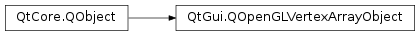

QOpenGLVertexArrayObject¶
Synopsis¶
Detailed Description¶
The
PySide2.QtGui.QOpenGLVertexArrayObjectclass wraps an OpenGL Vertex Array Object.A Vertex Array Object (VAO) is an OpenGL container object that encapsulates the state needed to specify per-vertex attribute data to the OpenGL pipeline. To put it another way, a VAO remembers the states of buffer objects (see
PySide2.QtGui.QOpenGLBuffer) and their associated state (e.g. vertex attribute divisors). This allows a very easy and efficient method of switching between OpenGL buffer states for rendering different “objects” in a scene. ThePySide2.QtGui.QOpenGLVertexArrayObjectclass is a thin wrapper around an OpenGL VAO.For the desktop, VAOs are supported as a core feature in OpenGL 3.0 or newer and by the GL_ARB_vertex_array_object for older versions. On OpenGL ES 2, VAOs are provided by the optional GL_OES_vertex_array_object extension. You can check the version of OpenGL with QOpenGLContext::surfaceFormat() and check for the presence of extensions with
QOpenGLContext.hasExtension().As with the other Qt OpenGL classes,
PySide2.QtGui.QOpenGLVertexArrayObjecthas aPySide2.QtGui.QOpenGLVertexArrayObject.create()function to create the underlying OpenGL object. This is to allow the developer to ensure that there is a valid current OpenGL context at the time.Once you have successfully created a VAO the typical usage pattern is:
The act of binding the VAO in the render function has the effect of restoring all of the vertex data state setup in the initialization phase. In this way we can set a great deal of state when setting up a VAO and efficiently switch between state sets of objects to be rendered. Using VAOs also allows the OpenGL driver to amortise the validation checks of the vertex data.
Note
Vertex Array Objects, like all other OpenGL container objects, are specific to the context for which they were created and cannot be shared amongst a context group.
See also
QOpenGLVertexArrayObject.BinderPySide2.QtGui.QOpenGLBuffer
-
class
PySide2.QtGui.QOpenGLVertexArrayObject([parent=nullptr])¶ Parameters: parent – PySide2.QtCore.QObjectCreates a
PySide2.QtGui.QOpenGLVertexArrayObjectwith the givenparent. You must callPySide2.QtGui.QOpenGLVertexArrayObject.create()with a valid OpenGL context before using.
-
PySide2.QtGui.QOpenGLVertexArrayObject.bind()¶ Binds this vertex array object to the OpenGL binding point. From this point on and until
PySide2.QtGui.QOpenGLVertexArrayObject.release()is called or another vertex array object is bound, any modifications made to vertex data state are stored inside this vertex array object.If another vertex array object is then bound you can later restore the set of state associated with this object by calling on this object once again. This allows efficient changes between vertex data states in rendering functions.
-
PySide2.QtGui.QOpenGLVertexArrayObject.create()¶ Return type: PySide2.QtCore.boolCreates the underlying OpenGL vertex array object. There must be a valid OpenGL context that supports vertex array objects current for this function to succeed.
Returns
trueif the OpenGL vertex array object was successfully created.When the return value is
false, vertex array object support is not available. This is not an error: on systems with OpenGL 2.x or OpenGL ES 2.0 vertex array objects may not be supported. The application is free to continue execution in this case, but it then has to be prepared to operate in a VAO-less manner too. This means that instead of merely callingPySide2.QtGui.QOpenGLVertexArrayObject.bind(), the value ofPySide2.QtGui.QOpenGLVertexArrayObject.isCreated()must be checked and the vertex arrays has to be initialized in the traditional way when there is no vertex array object present.
-
PySide2.QtGui.QOpenGLVertexArrayObject.destroy()¶ Destroys the underlying OpenGL vertex array object. There must be a valid OpenGL context that supports vertex array objects current for this function to succeed.
-
PySide2.QtGui.QOpenGLVertexArrayObject.isCreated()¶ Return type: PySide2.QtCore.boolReturns
trueis the underlying OpenGL vertex array object has been created. If this returnstrueand the associated OpenGL context is current, then you are able toPySide2.QtGui.QOpenGLVertexArrayObject.bind()this object.
-
PySide2.QtGui.QOpenGLVertexArrayObject.objectId()¶ Return type: PySide2.QtOpenGL.GLuintReturns the id of the underlying OpenGL vertex array object.
-
PySide2.QtGui.QOpenGLVertexArrayObject.release()¶ Unbinds this vertex array object by binding the default vertex array object (id = 0).
© 2018 The Qt Company Ltd. Documentation contributions included herein are the copyrights of their respective owners. The documentation provided herein is licensed under the terms of the GNU Free Documentation License version 1.3 as published by the Free Software Foundation. Qt and respective logos are trademarks of The Qt Company Ltd. in Finland and/or other countries worldwide. All other trademarks are property of their respective owners.